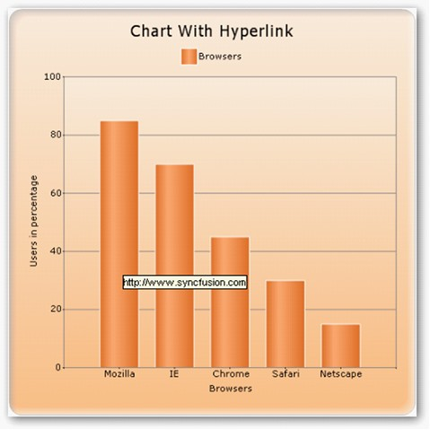
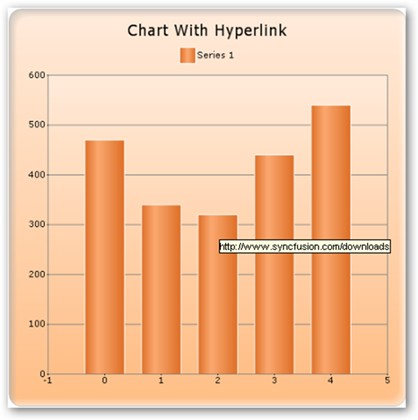

Series Wide Setting
Specify hyperlink for a series using Series.Style.Url property.
|
[CS]
this.ChartWebControl1.EnableUrl = true; this.ChartWebControl1.CalcRegions = true; this.ChartWebControl1.Series[0].Style.Url = “www.Syncfusion.com”; |
|
[VB]
Me.ChartWebControl1.EnableUrl = True Me.ChartWebControl1.CalcRegions = True Me.ChartWebControl1.Series(0).Style.Url = “www.Syncfusion.com” |

Figure 227: Hyperlink Support for the Series
Specific Data Point Setting
Specify hyperlink for a data points using Series.Styles[0].Url property.
|
[CS]
this.ChartWebControl1.EnableUrl = true; this.ChartWebControl1.CalcRegions = true; this.ChartWebControl1.Series[0].Styles[0].Url = "http://www.syncfusion.com/developments"; this.ChartWebControl1.Series[0].Styles[1].Url = "http://www.syncfusion.com/downloads"; this.ChartWebControl1.Series[0].Styles[2].Url = "http://www.syncfusion.com/support"; |
|
[VB]
Me.ChartWebControl1.EnableUrl = True Me.ChartWebControl1.CalcRegions = True Me.ChartWebControl1.Series(0).Styles(0).Url = "http://www.syncfusion.com/developments" Me.ChartWebControl1.Series(0).Styles(1).Url = “http://www.syncfusion.com/downloads” Me.ChartWebControl1.Series(0).Styles(2).Url = "http://www.syncfusion.com/support" |

Figure 228: Hyperlink support for specific data points
 Note: This Url property suppports only for chart
web.
Note: This Url property suppports only for chart
web.